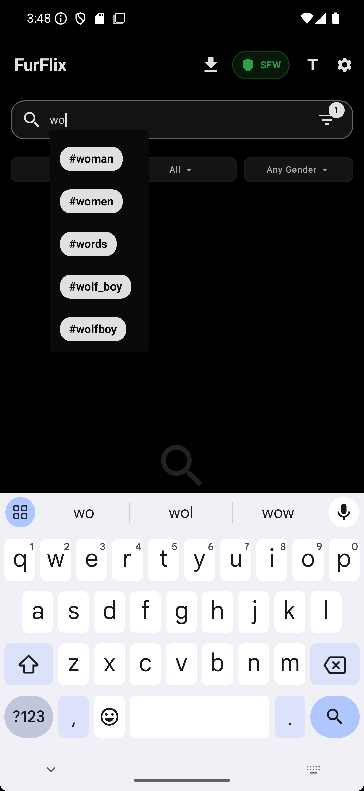

FurFlix APK for Android 8+
FurFlix is an unofficial FurAffinity app for Android. Browse artwork, find submissions with tag autocomplete, and save images for offline viewing.
Get the latest APK on GitHubInstall or update FurFlix
- On the latest GitHub release, open Assets and download the .apk file.
- Open the file on your Android phone. If Android asks for permission to install from your browser or file manager, follow the on-screen prompt.
- Tap Install for a new installation or Update if FurFlix is already installed.
Find FurAffinity artwork by tag
Open search and start typing a tag. Pick a suggestion, then narrow the results by rating, category, or date. When you find a submission you like, open it and download the image to view it offline.
